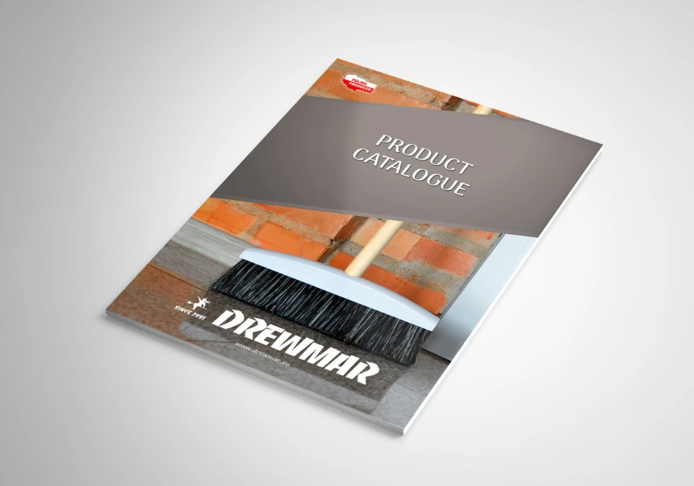
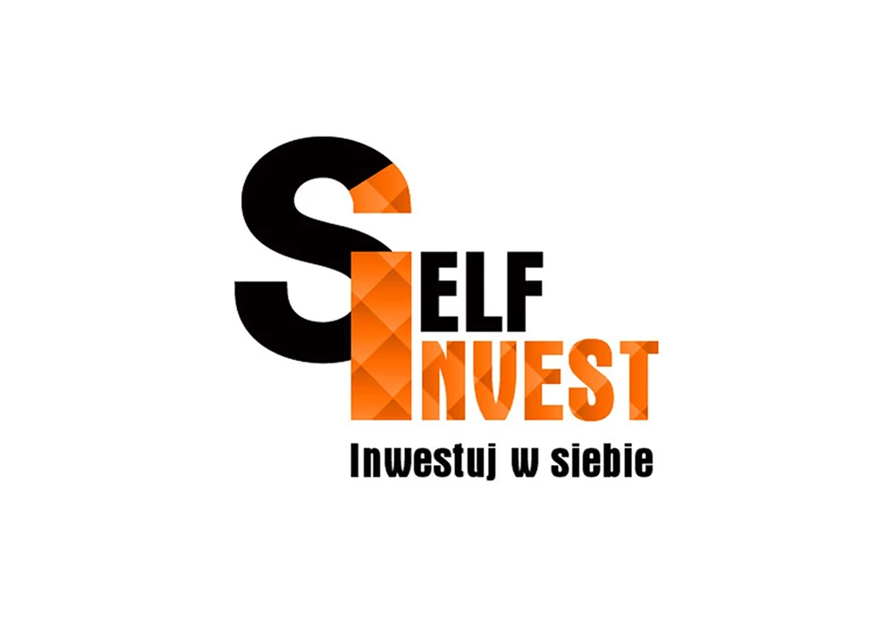
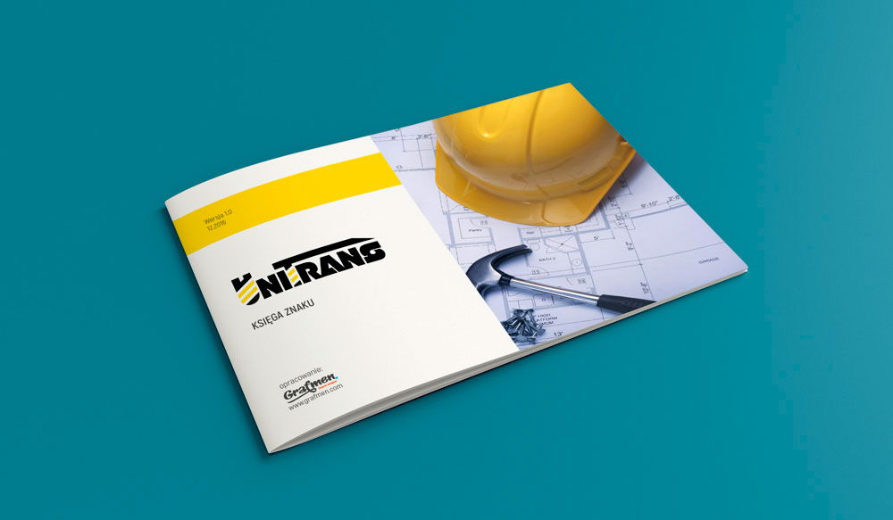
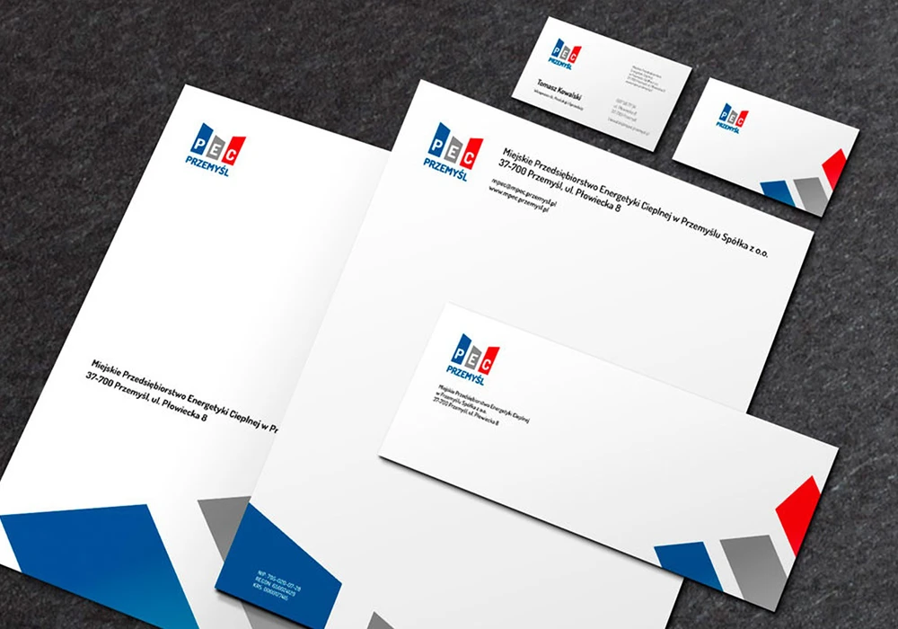
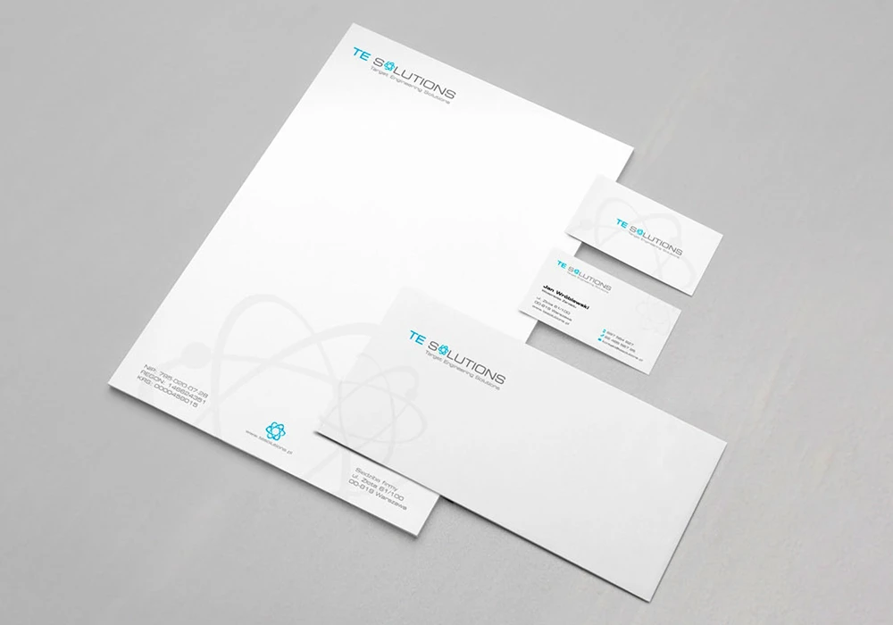
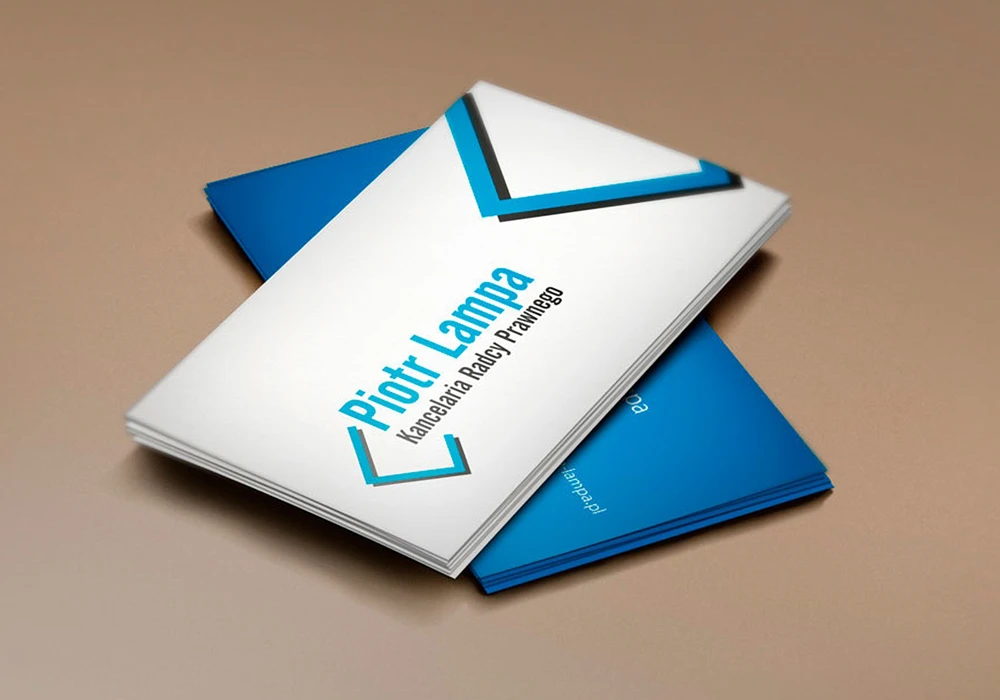
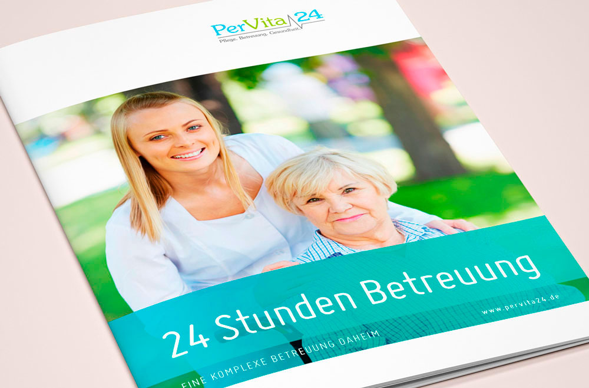
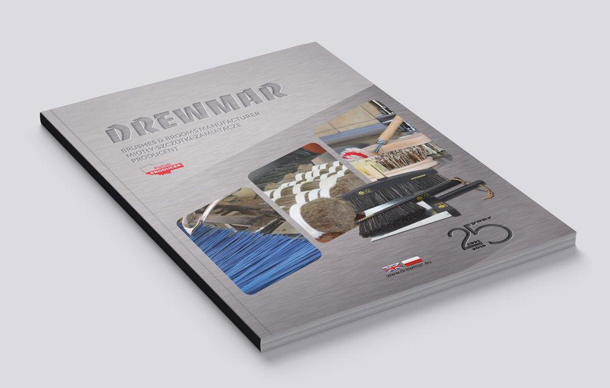
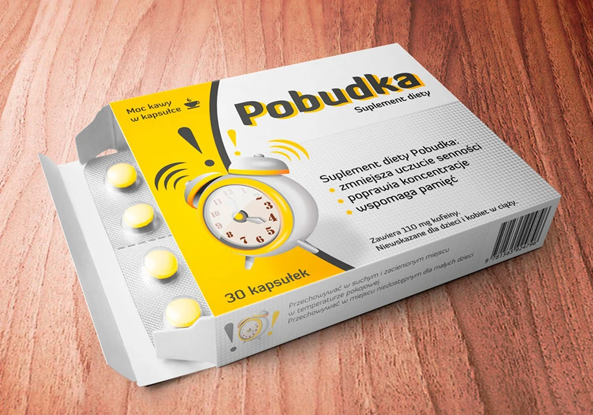

![Grafmen]()
PORTFOLIO / GRAFMEN
Realizacje, które
zatrzymują uwagę.
21 realizacji: strony internetowe, identyfikacje wizualne, materiały i filmy. Zobacz wybrane projekty dla moich klientów.
-
 Zobacz projekt
Zobacz projekt Strona WWW
Drewmax.pro
Strona producenta szczotek i akcesoriów do sprzątania. Klient współpracuje ze mną od 10 lat · od pierwszej strony po bieżące materiały reklamowe.
-
 Obejrzyj film
Obejrzyj film Motion / video
Film reklamowy Hiker
Film reklamowy prezentujący markę Hiker w otoczeniu gór i przyrody.
-
Zobacz projekt

Strona WWW
szkola.best
Strona szkoły języka angielskiego dla dzieci i młodzieży. Porządkuje ofertę kursów i prowadzi rodzica od pierwszego kontaktu do zapisu.
-
 Zobacz projekt
Zobacz projekt Logo / branding
Hiker
Identyfikacja wizualna marki outdoorowej. System logo i materiałów buduje spójny obraz marki na szlaku i w kontakcie z klientem.
-
 Zobacz projekt
Zobacz projekt Strona WWW
Drew-Art
Propozycja strony dla firmy z branży drzewnej. Układ porządkuje ofertę i pokazuje produkty w nowoczesnym, sprzedażowym kontekście.
-
 Zobacz projekt
Zobacz projekt Logo / branding
JD Ubezpieczenia
Logo i materiały firmowe dla marki ubezpieczeniowej. Identyfikacja łączy inicjały z motywem ochrony i porządkuje komunikację marki.

Katalog
Katalog Drew-Art
Katalog produktowy, który porządkuje ofertę i prowadzi odbiorcę przez najważniejsze grupy produktów.

Strona WWW
Montessori.com.pl
Strona placówki Montessori w Przemyślu, z informacjami dla rodziców i uporządkowaną ofertą.

Logo / branding
PiwoRob
Nazwa i logo dla lokalnego browaru rzemieślniczego na Podkarpaciu.

Katalog
Katalog Drewmar
Materiały katalogowe dla producenta akcesoriów do sprzątania, zgodne z językiem marki.

Strona WWW
Ja i mój biznes
Strona internetowa uporządkowana wokół oferty i pierwszego kontaktu z klientem.

Druk
Gazetka Drewmar
Promocyjny materiał drukowany prezentujący produkty i sezonową ofertę firmy.

Logo / branding
Self Invest
Identyfikacja wizualna firmy konsultingowej Self Invest. System znaku i materiałów buduje spójny obraz marki w relacjach z klientami.

Katalog / druk
Katalog Uni-Trans
Katalog reklamowy i materiały informacyjne dla firmy budowlano-transportowej Uni-Trans.

Logo / branding
MPEC Przemyśl
Identyfikacja wizualna i komplet materiałów firmowych: papeteria, koperty oraz akcydensy dla MPEC Przemyśl.

Identyfikacja / branding
TE Solutions
Materiały identyfikacji wizualnej: logotyp, papeteria firmowa oraz materiały biurowe przygotowane dla marki TE Solutions.

Identyfikacja / branding
Kancelaria Lampa
Projekt logo, wizytówek, papieru firmowego i kopert dla Kancelarii Radcy Prawnego Piotra Lampy.

Katalog
Broszura PerVita24
Broszura reklamowa, która zbiera ofertę w czytelny materiał do kontaktu z klientami.

Logo / branding
GearExpert
Identyfikacja wizualna obejmująca logo i materiały firmowe.

Katalog
Katalog targowy Drewmar
Katalog przygotowany na targi Ambiente we Frankfurcie.

Opakowanie
Pobudka
Wizualizacja opakowania suplementu diety w kontekście produktu.